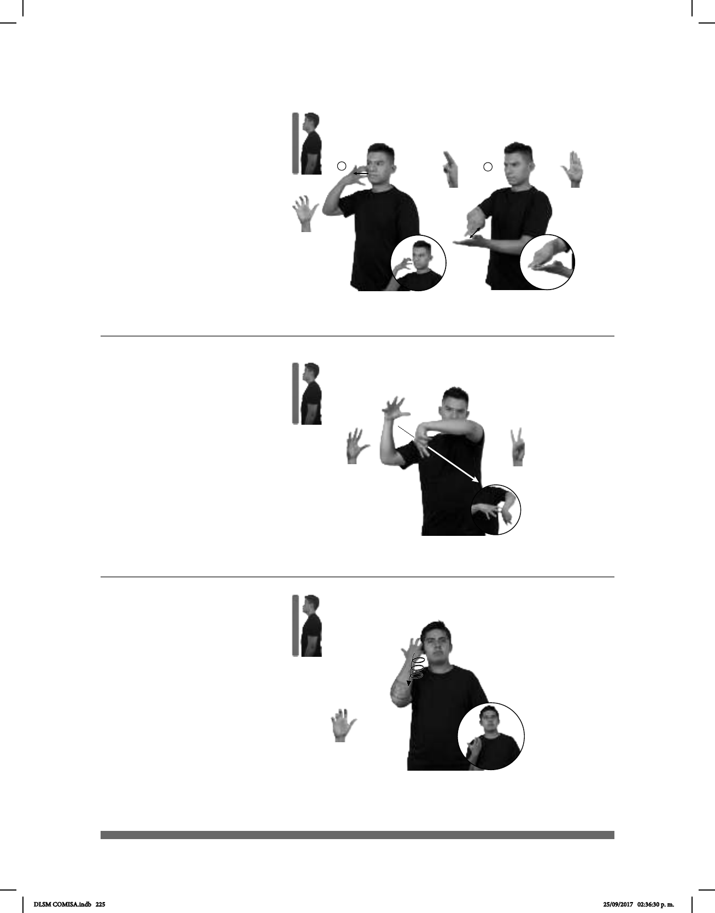

225
Seña: SB
MD 5.2, MB 2.1
MD palma oblicua hacia la
izquierda y hacia abajo. MB palma hacia
la izquierda.
MD y MB del hombro al
abdomen, del lado derecho al lado
izquierdo.
MD y MB recto.
sust. m. Dispositivo para
frenar la caída de un cuerpo desde un
avión, que consiste en una tela muy
grande, ligera y resistente, sujeta por
cuerdas a un arnés. Al desplegarse en el
aire, la tela se extiende como una
sombrilla y amortigua la caída.
Seña: SC: I. SM; II. SB
I. 5.18; II. MD U.3, MB
B-P.2
I. Palma hacia adentro; II.
MD palma hacia abajo. MB palma hacia
arriba.
I. La mano inicia sobre la
mejilla y se desliza hacia la oreja; II. A la
altura del pecho. MD sobre MB.
I. Recto; II. MD recto hacia
enfrente repetidamente.
sust. f. Variedad de
leopardo que se caracteriza por tener la
piel completamente negra.
1
2
(5-G 97)
Paracaídas (5-G 98)
FIN SEMANA dm-AFRICAM dm-SAFARI
allá
pos-MI PRIMOS pro-NOSOTROS-DE-CUATRO
MUCHAS
área
PANTERAS LIBRE
área
ellos-VER-a-ellos
objetos
dm-AIMÉ SALTAR PARACAIDAS
Aimé saltó en paracaídas.
Seña: SM
5.11
La palma inicia hacia
adentro y termina oblicua hacia la
derecha y hacia adentro.
De la cabeza al hom-
bro.
La mano sigue una
trayectoria de movimientos
circulares.
sust. m. Cabello que
crece formando rizos.
(5-G 99)
pos-MI CUÑADO+MUJER pos-SU PELO CL: GARRA
pelo chino
Mi cuñada tiene su cabello chino.
DLSM COMISA.indb 225 25/09/2017 02:36:30 p. m.